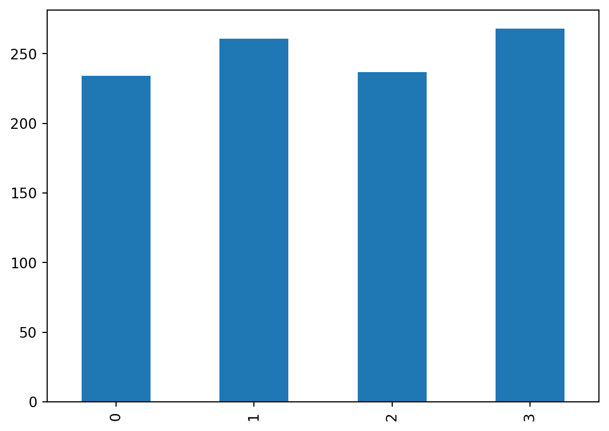
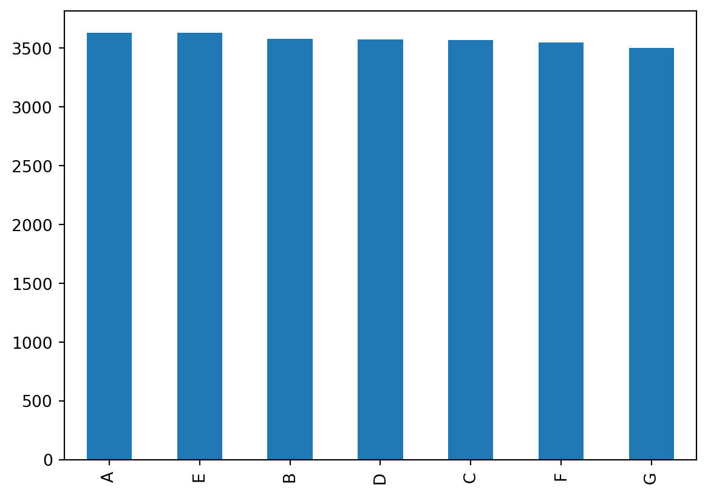

import numpy as np
rng = np.random.default_rng() # initialize a default random generator
bag = range(4)
ball = rng.choice(bag)
print(ball)2This course is about music and evolution, specifically about using computational models to better understand the mechanisms underlying certain evolutionary processes. In order to do so, we will often run simulations to observe and interpret the resulting scenarios against the backdrop of our modeling assumptions and our domain knowledge.
Simulations are useful because for many situations we are not able to provide deterministic mathematical formulae to obtain outcomes from inputs. Rather, we incorporate our knowledge about the world in a computational model and use randomness to include the inherent uncertainty about the exact outcomes of the simulations.
But randomness is a difficult concept to capture. For the purpose of this book, we will simulate a speficic kind of randomness by sampling from a certain set of items. Less technically, we can imagine a bag with a certain number of balls in it, each having a certain color (multiple balls can have the same color). A random uniform sample with replacement then corresponds to picking a ball from the bag without looking in it and putting it back in the bag.
Let’s try this in Python. We will use the random modul of the NumPy library:
import numpy as np
rng = np.random.default_rng() # initialize a default random generator
bag = range(4)
ball = rng.choice(bag)
print(ball)2If this draw were really random, we would expect that each number is equally likely. We can test this by repeating this procedure again and again, tallying the result each time.
import pandas as pd
import matplotlib.pyplot as plt
samples = []
for i in range(1000):
ball = rng.choice(bag)
samples.append(ball)
s = pd.Series(samples)
print(s.head(10))
print(s.value_counts().sort_index())0 0
1 1
2 0
3 1
4 2
5 1
6 0
7 2
8 3
9 3
dtype: int64
0 258
1 240
2 251
3 251
dtype: int64The number are not exactly the same but pretty close. If we would continue sampling from our bag, they would get more and more similar to one another. It is easier to understand this by visualizing it.
s.value_counts().sort_index().plot(kind="bar")
plt.show()
Now, what if the numbers in the bag were not just numbered, but had different colors? Let’s assume we have another bag, bag2, with 4 balls, three brown, one blue:
bag2 = [ "blue", "blue", "blue", "brown" ]
samples2 = []
for i in range(1000):
ball = np.random.choice(bag2)
samples2.append(ball)
s2 = pd.Series(samples2)
print(s2.head(10))
print(s2.value_counts().sort_index())
s2.value_counts().sort_index().plot(kind="bar")
plt.show()0 brown
1 blue
2 blue
3 blue
4 brown
5 brown
6 brown
7 blue
8 blue
9 blue
dtype: object
blue 763
brown 237
dtype: int64This is remarkable: by randomly (uniformly) drawing from the second bag, the frequencies of all samples approach the ratio of brown to blue balls (3:1)!
Since this book is about music, let’s see how we can use randomness to create (a resemblance of) music. For instance, we can ‘compose’ a random melody by using only the white keys on a piano within some octave:
notes = list("CDEFGAB")
melody = rng.choice(notes, size=10)
print(melody, end=" ")['C' 'G' 'F' 'D' 'G' 'A' 'C' 'C' 'F' 'E'] We composed a little melody by randomly drawing a note from the list of notes. This is also called sampling. Note that some notes repeat, showing that we sample with replacement: after each draw, the note is put back in the bag, so to speak. Of course, there are many things that we would have to generate, too, to make this a real melody. For instance, we do not know the duration of any of these notes, we don’t know the meter nor the key, we don’t know the tempo or volume, and so on. But our goal here is not to create a beautiful piece of music, but rather to show how we can use randomness to generate something.
As you might remember from the previous chapter, we can also write a function to do this, so that we can perform this operation (composition of a random melody) more easily, while at the same time having more control over it through its parameters. The following function does exactly this, having only one parameter that controlls the length of the melody (the number of notes to be sampled).
def melody(n):
notes = list("CDEFGAB")
return rng.choice(notes, size=n)We can now use this function to easily create random melodies of different lengths:
print(melody(7))['E' 'B' 'G' 'F' 'A' 'C' 'B']print(melody(12))['A' 'G' 'E' 'B' 'E' 'D' 'G' 'B' 'C' 'D' 'F' 'A']The functionalities introduced above allow us to synthesize an artificial corpus of melodies, here simplified as lists of pitch classes and containing varying numbers of notes.
N = 4 # number of pieces in the corpus
corpus = [ melody(12) for _ in range(N)]The first three melodies of our corpus are:
for mel in corpus:
print(mel)['B' 'G' 'D' 'F' 'D' 'E' 'E' 'D' 'B' 'B' 'A' 'F']
['C' 'C' 'A' 'E' 'A' 'C' 'F' 'B' 'G' 'E' 'B' 'F']
['G' 'G' 'G' 'F' 'A' 'G' 'G' 'G' 'D' 'E' 'F' 'G']
['D' 'A' 'F' 'F' 'B' 'F' 'G' 'G' 'G' 'D' 'E' 'A']Of course, melodies are not always of the same length. We could vary the lenght of the melodies by creating a hand-crafted list specifying the number of notes for each melody in the corpus.
corpus = [ melody(n) for n in [10, 5, 7, 13] ]
for mel in corpus:
print(mel)['B' 'C' 'G' 'B' 'E' 'B' 'C' 'A' 'C' 'B']
['G' 'C' 'G' 'A' 'C']
['C' 'B' 'C' 'E' 'E' 'D' 'D']
['C' 'B' 'B' 'E' 'A' 'C' 'A' 'C' 'D' 'A' 'C' 'C' 'G']However, specifying the lenghts of the melodies for a large corpus would be a very time-consuming task. In order to model the variability in length of melodies in a musical corpus, we will randomly sample them from a specified probability distribution. A good candidate for such a distribution is the Poisson distribution, that we can access from our random number generator rng.
lam = 25 # average number of notes in melody
N = 1000 # number of pieces in the corpus
corpus = [ melody(rng.poisson(lam=lam)) for _ in range(N) ]
lengths = pd.Series([ len(m) for m in corpus ]).value_counts()
idx = range(0, max(lengths))
lengths = lengths.sort_index().reindex(idx).fillna(0)
plt.bar(idx, lengths)
plt.axvline(lam, c="red")
plt.show()Now the variable corpus contains lists of pitch classes (aka melodies) of different lengths, most of them around the preset average value lam,1 also indicated by the vertical red line. It is moreover evident that the corpus contains rather few very short or long melodies.
We can, of course, not only observe the distribution of melody lengths, but also look at the overall distribution of note occurrence in the corpus:
counts = []
for m in corpus:
c = pd.Series(m)
counts.append(c)
pd.concat(counts).value_counts().plot(kind="bar")
plt.show()
At this point, we should stop and celebrate. We have just written our first probabilistic model to generate melodies. Admittedly, it is not a very good model for actual melodies, for example because notes are drawn uniformly at random from the set of diatonic pitch classes using the .choice() method, which leads to the somewhat unrealistic picture in Figure 4.2. One would expect that in real melodies some notes occur more often than others and that the occurrence of a note does, for instance, also depend on the notes that come before and after it. But, in principle, these other constraints could be added to our model to make it more realistic. The point here was mainly to illustrate how artificial corpora can be generated probabilistically. This will prove useful later on because it allows us to compare real-world corpora of music against synthetic ones generated by our models.
Expand our melody model so that it also includes octave information for each pitch class in order to make it a bit more musical.
Now that we have a corpus that we understand very well because we specified how it has been created, we can apply some simple analytical questions in order to warm up for later. For instance, we could want to have a function that allows us to search for incipits. Incipits are the beginnings of musical melodies that already to characterize themes and motives because incipits are often characteristic. For example, we would want to look for all melodies that begin with “C”, “D”, “E” and, for simplicity, we might want to pass a string like “CDE” to the function to facilitate the input.
import re
def find_incipit(incip="", mel=None):
melody = "".join(mel)
if re.search("^" + incip, melody):
return True
else:
return False
for m in corpus[:10]:
if find_incipit(incip="CDE", mel=m):
print("".join(m))We can apply a similar logic to find finals, the last notes of a melody. Instead of only allowing to search for a single note as a final, we will allow more generally to allow for a pattern that concludes a melody:
def find_finals(end="", mel=None):
melody = "".join(mel)
if re.search(end + "$", melody):
return True
for m in corpus[:100]:
if find_finals(end="GC", mel=m):
print(m)['D' 'D' 'D' 'A' 'G' 'E' 'E' 'D' 'A' 'F' 'C' 'C' 'F' 'G' 'G' 'F' 'F' 'D'
'E' 'B' 'F' 'G' 'C' 'F' 'G' 'C']As you can see, all found melodies end with a falling perfect fifth form “G” to “C”.
The last function, find_finals(), introduced the “^” (caret) character. In the context of regular expressions, this character signifies “at the end of a string”, exactly what we needed to find finals.
Introduce regexes more flexibly and write a general pattern matcher.
Four-part writing is a core part of Western composition history. Here, we will build a mock version of a four-part chorale by randomly generating each voice and putting them together in a table. Doing so will show you how you can create tables, which we will need later on. The most popular way to work with tables in Python is by using the pandas library. In pandas, tables are called ‘data frames’, and there is a DataFrame object to represent tables. Let’s see how we could create a four-part homophonic chorale with eight ‘chords’:
import pandas as pd
n = 8
chorale = pd.DataFrame({
"S" : melody(n),
"A" : melody(n),
"T" : melody(n),
"B" : melody(n)
})The variable chorale now stores our little composition and we can inspect it:
chorale| S | A | T | B | |
|---|---|---|---|---|
| 0 | D | B | A | E |
| 1 | A | A | F | C |
| 2 | C | D | E | B |
| 3 | C | E | E | A |
| 4 | A | E | B | E |
| 5 | F | A | C | D |
| 6 | C | C | B | D |
| 7 | D | C | G | F |
Here we have generated each voice using the melody function. We can use it to create a new function that will directly give us a new chorale of a certain length:
def chorale(n):
df = pd.DataFrame({
"S" : melody(n=n),
"A" : melody(n=n),
"T" : melody(n=n),
"B" : melody(n=n)
})
return dfmy_chorale = chorale(n=12)
my_chorale| S | A | T | B | |
|---|---|---|---|---|
| 0 | A | F | C | A |
| 1 | E | D | G | G |
| 2 | C | B | E | G |
| 3 | A | G | F | C |
| 4 | F | G | E | A |
| 5 | A | D | E | G |
| 6 | D | F | D | C |
| 7 | C | C | E | E |
| 8 | B | G | G | B |
| 9 | E | D | A | D |
| 10 | A | F | B | B |
| 11 | G | G | D | B |
It will look a bit closer to musical notation if we transpose the data frame by using the .T attribute:
my_chorale.T| 0 | 1 | 2 | 3 | 4 | 5 | 6 | 7 | 8 | 9 | 10 | 11 | |
|---|---|---|---|---|---|---|---|---|---|---|---|---|
| S | A | E | C | A | F | A | D | C | B | E | A | G |
| A | F | D | B | G | G | D | F | C | G | D | F | G |
| T | C | G | E | F | E | E | D | E | G | A | B | D |
| B | A | G | G | C | A | G | C | E | B | D | B | B |
Having the variable my_chorale store our data frame, this is how we can access individual voices:
my_chorale["T"]0 C
1 G
2 E
3 F
4 E
5 E
6 D
7 E
8 G
9 A
10 B
11 D
Name: T, dtype: objectYou can verify that it is the same ‘melody’ as above in the chorale. If we want a specific note from this voice, say the fifth one, we can access is this way:
my_chorale["T"][4]'E'We first select the “T” column, and then select the fifth element (remember that we start counting at 0, so we need to insert 4 to get the fifth). We can also get entire ranges of a voice:
my_chorale["A"][4:8]4 G
5 D
6 F
7 C
Name: A, dtype: objectThis gives us the fifths to ninth note in the Alto voice. If we want to apply the same logic also to column ranges, we have to write it a bit differently using the .loc() method for localising data:
my_chorale.loc[1:3, "S":"A"]| S | A | |
|---|---|---|
| 1 | E | D |
| 2 | C | B |
| 3 | A | G |
.loc() takes two arguments: the rows (or row range), and the columns (or column range). We can use it to ‘slice’ our data frame in order to get specific portions of it.
Short for the Greek letter \(\lambda\) (“lambda”).↩︎